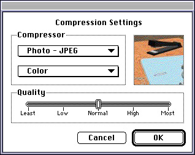
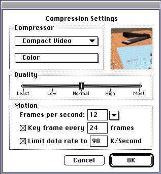

About Standard Image-Compression Dialog Components
Standard image-compression dialog components provide a consistent user interface for specifying the parameters that control the compression of an image or image sequence. Your application specifies a test image for the dialog box and then calls the standard-image compression component. The component then presents a dialog box
to the user, manages the dialog box, validates the user's settings, and stores those settings for your application. The standard dialog component also provides numerous facilities for determining reasonable default settings for a given image or sequence. Finally, this component manages the process of compressing the image or image sequence, using the parameter settings provided by the user or your application.By using a standard image-compression dialog component, you can reduce the amount of work you need to do in your application in order to compress an image or an image sequence. For example, you can eliminate the need to manage interactions with the user and to validate the image-compression parameters specified by the user. Furthermore, the standard dialog component simplifies the process of compressing images or sequences. This, in turn, allows you to focus on the problem at hand, rather than on the details of image-compression parameters. In addition, the standard image-compression dialog component supplied by Apple supports many features that are helpful to the user, including Balloon Help and a test image. Finally, Apple's component will be localized by Apple, so that you need not worry about international issues relating to this dialog box.
Standard image-compression dialog components support two basic dialog boxes. One dialog box provides a minimal interface and is suitable for compressing single images. Figure 3-1 shows an example of this dialog box. Using this dialog box, the user can select a compressor component, the pixel depth for the operation, and the desired spatial quality.
Figure 3-1 Dialog box for single-frame compression

The other dialog box allows the user to set compression parameters for image sequences. In addition to the parameters supported by the single-frame dialog box, this dialog box supports frame rate, key frame rate, spatial and temporal quality settings, and data rate settings (for more information about these aspects of image compression, see the chapter "Image Compression Manager" in Inside Macintosh: QuickTime). Figure 3-2 shows an example of this dialog box.
Figure 3-2 Dialog box for image-sequence compression

Your application can control which dialog box is presented to the user.
By using standard dialog components, you can avoid many of the details of obtaining, validating, and using image-compression parameters. The process of validating
image-compression parameters can be very involved, depending upon the capabilities of the selected compressor component. Apple's standard image-compression dialog component verifies that the user's settings are valid for the selected compressor. In addition, this component uses a test image to demonstrate the effects of the user's compression settings.